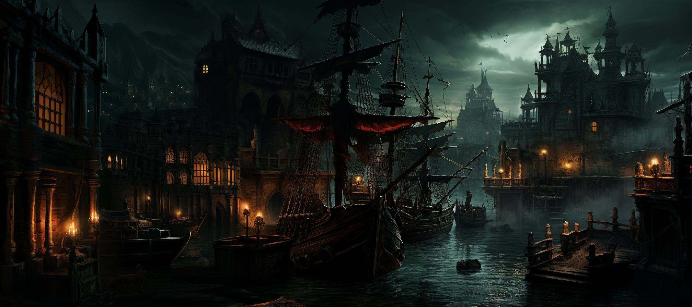

|

Black BayNestled like a wild gem amidst the treacherous waves of the realms, Bahía Negra emerges as a pirate stronghold where the promise of gold and a life at sea lure the most daring and ruthless rogues. Here, the pirate hierarchy rules every alley, and loyalty is measured in doubloons and in cunning to survive in the treacherous waters of Fae'Gir. Life in Bahía Negra is as challenging as the turbulent waves that surround it. The seas of Fae'Gir are populated by hideous creatures and storms that could deter even the most fearless of sailors. However, the inhabitants of Bahía Negra have developed a powerful naval mastery, allowing them to navigate the waters with skill and plunder coastal areas without fear of significant reprisals. Amidst its bustling streets and taverns filled with sailor's songs, Bahía is a haven for those seeking a free and unrestrained life, albeit fraught with constant dangers. The city, with its aura of mystery and peril, stands as a point of freedom amidst the vast ocean of uncertainty that is Fae'Gir. |
| Gallery |
|---|
|
|